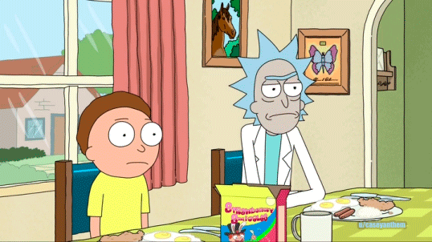
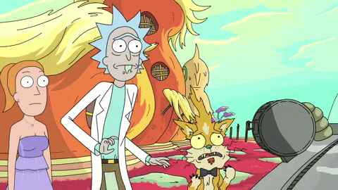
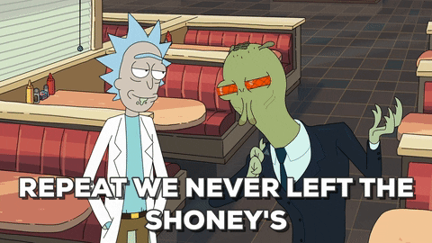
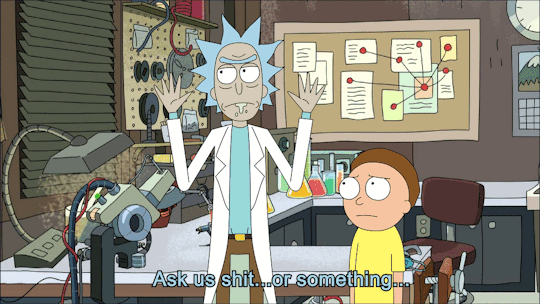
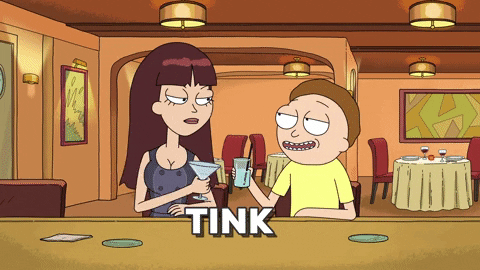
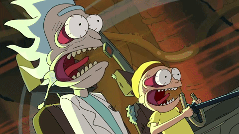

can be a real threat.
Rick and Morty's Crimes
From a first glance this two look like an musty oldie and a retarted kid,
but truly these are the perilous duo.
Rick Sanchez
You can't expect this man to be a bonafide. Trust me. Even though Rick Sanchez
had been mysteriously missing from the family for a total of 14 years what
do you think he was doing back then? Now let's talk about his demeanor.
Rick is a genius scientist, capable of creating complex scientific inventions,
including brain-enhancing helmets, dream-invading devices,
portals to several different dimensions, and the world's first amusement park
inside the body of a living human. His brilliance can be muddled by his jaded
personal views and his alcoholic tendencies. He is usually portrayed as homicidal
and having a large disregard for life, enough that he came close to bombing the world
with neutrinos while drunk. He was shown to find killing fun during the Purge
and was even willing to kill Morty's half-Gazorpian son due to the child's danger
to everyone and unstable nature.
Beware this creature!



Morty
At the first glance he seems like a straggling kid. But don't let him
fool yourself! With the huge aid of his grandad he's been permanently
committing crimes against creatures from space.
When the group at Anatomy Park are attacked by Gonorrhea,
he comes up with the idea to exploit the gas building up in the body to defeat
the disease. He is able to grasp complex concepts,
such as the multiverse of infinite realities, when Rick explains them to him,
and is quick to notice Rick's hypocrisy regarding the morality of his microverse in "The Ricks Must Be Crazy."
His hidden intelligence also continues to be an asset in season 2.
Impressively, Morty is able to distract Fart, a being capable of reading minds,
by requesting that he sing. This gives Morty time to kill him
with an antimatter gun, clearly surprising the telepathic being.



That's all folks!
to be continued...